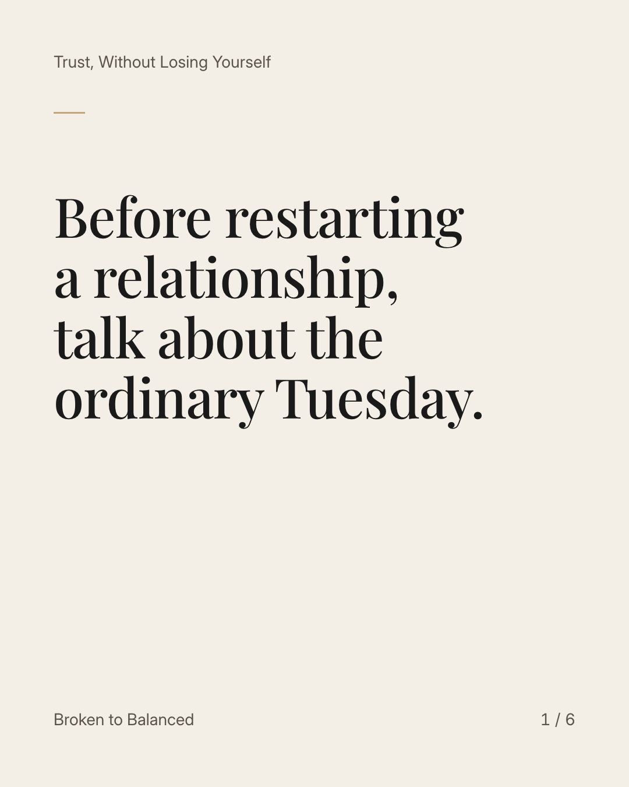
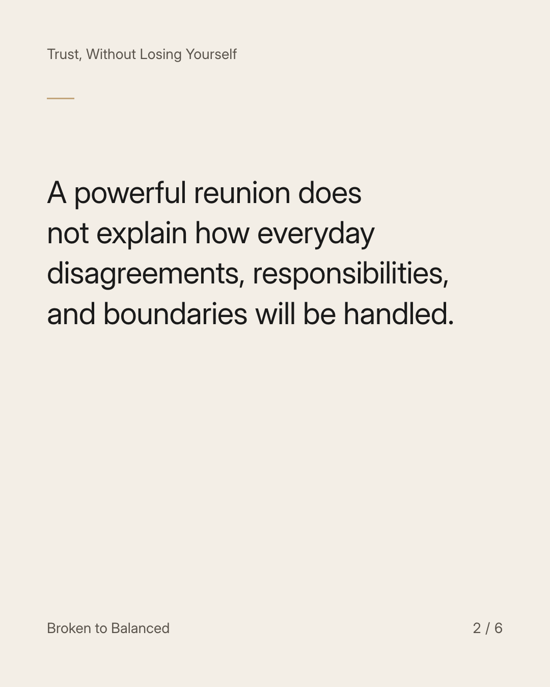
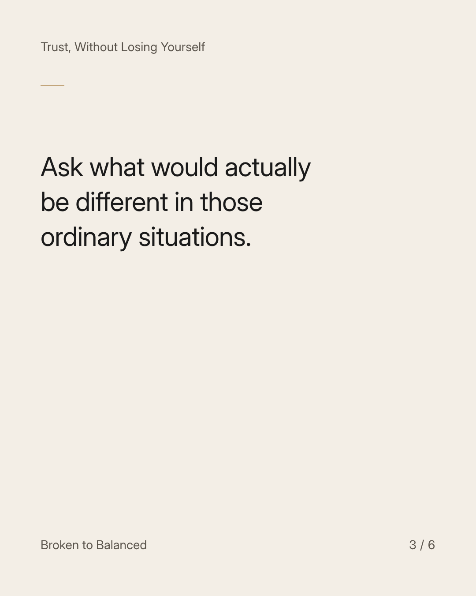
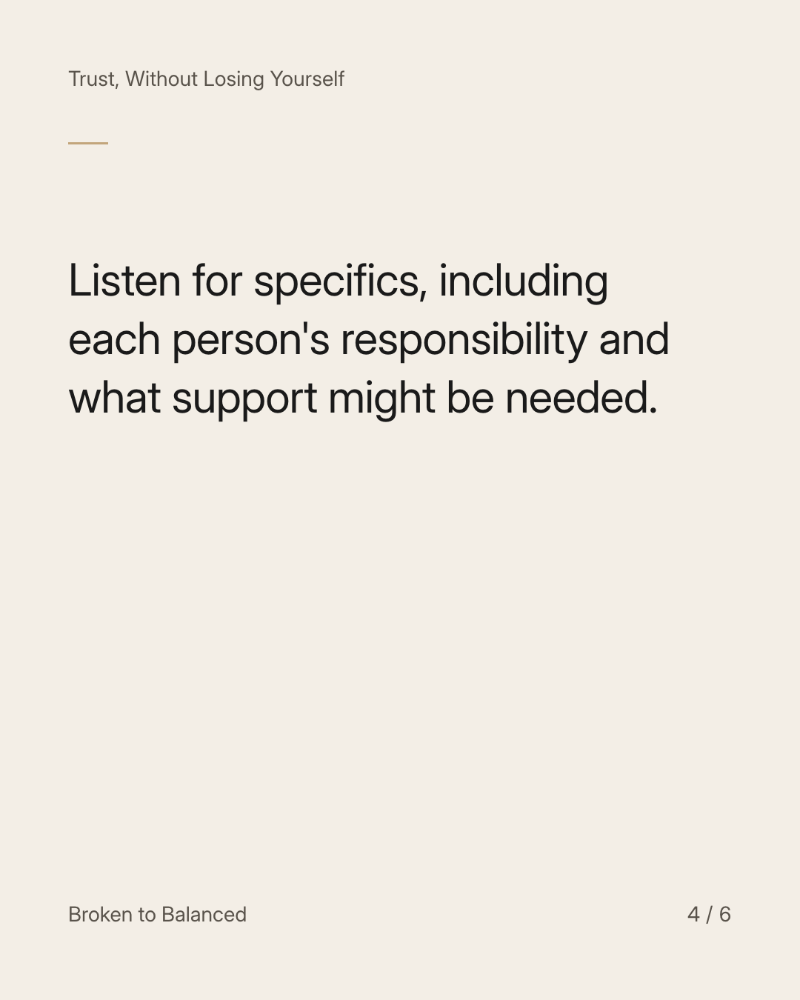
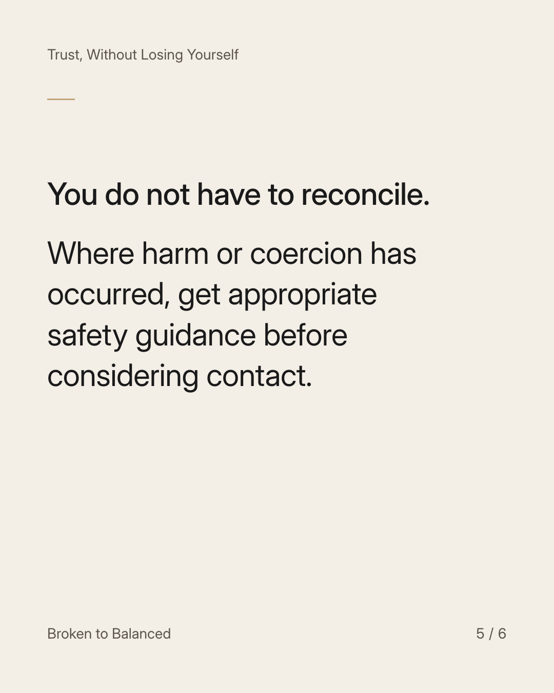
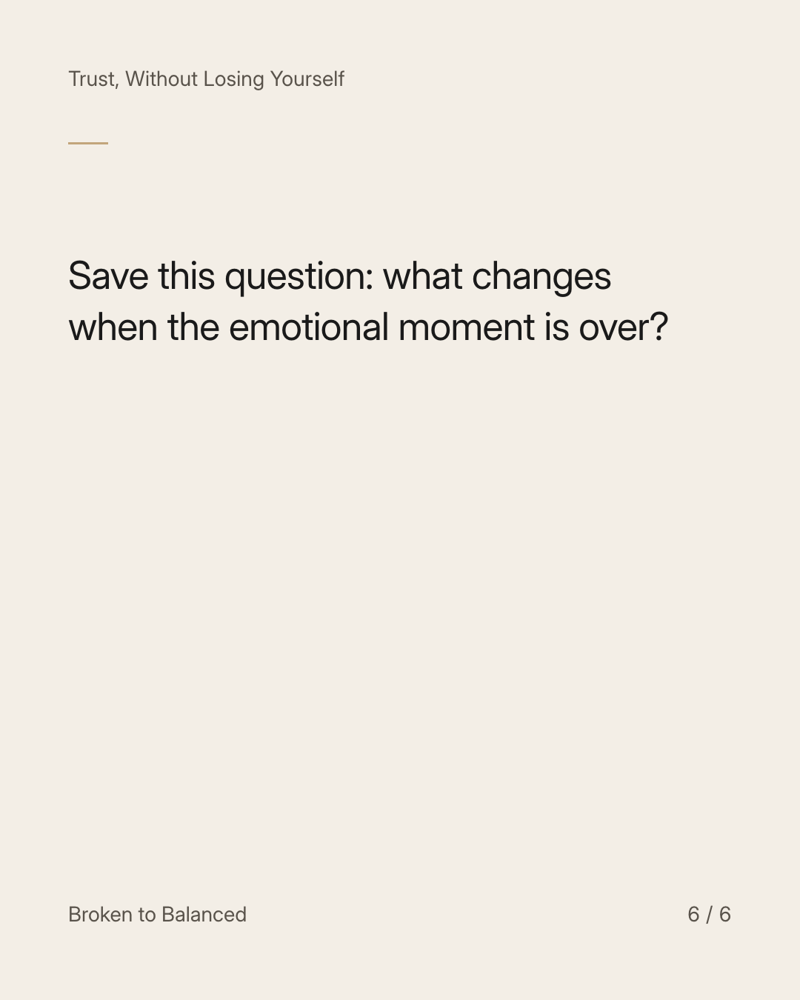

Exact text and accessibility text
Before restarting a relationship, talk about the ordinary Tuesday.
Slide 1 of 6. Before restarting a relationship, talk about the ordinary Tuesday.


Exact text and accessibility text
A powerful reunion does not explain how everyday disagreements, responsibilities, and boundaries will be handled.
Slide 2 of 6. A powerful reunion does not explain how everyday disagreements, responsibilities, and boundaries will be handled.


Exact text and accessibility text
Ask what would actually be different in those ordinary situations.
Slide 3 of 6. Ask what would actually be different in those ordinary situations.


Exact text and accessibility text
Listen for specifics, including each person's responsibility and what support might be needed.
Slide 4 of 6. Listen for specifics, including each person's responsibility and what support might be needed.


Exact text and accessibility text
You do not have to reconcile. Where harm or coercion has occurred, get appropriate safety guidance before considering contact.
Slide 5 of 6. You do not have to reconcile. Where harm or coercion has occurred, get appropriate safety guidance before considering contact.


Exact text and accessibility text
Save this question: what changes when the emotional moment is over?
Slide 6 of 6. Save this question: what changes when the emotional moment is over?
Exact caption
Plain-text fallback: select and copy the caption.